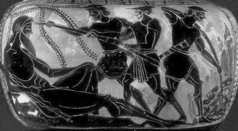

"Tepegözler" de diyebileceğimiz Kikloplar (Kyklopes), alınlarının ortasında tek gözleri olan dev yapılı yaratıklardı... Örneğin bir Kiklop tanrılara başkaldırdığında, tek eliyle bir tepeyi bile yerinden söküp onların Olimpos'taki saraylarına doğru fırlatabiliyordu!..
İlkçağ yazarlarından birçoğu Kikloplar üzerine bir şeyler yazdılar ve genellikle onları üç kümeye ayırdılar.
İlk kümedekiler, Uranosoğulları soyundan gelen demirci Tepegözlerdi.
Bu türden Kikloplar; tanrı Uranos (Gökyüzü) ile tanrıça Gaya'nın (Yeryüzü) aşklarından doğan çocuklardı... O süreçte evrenin baştanrısı olan Uranos, karısı Gaya'nın doğurduğu bu çocuklardan birinin gün gelip baştanrılık tahtına kurulmasından ürktüğü için onları hep yedi kat yerin altındaki cehennem ülkesi Tartaros'a kapatıyordu... Anaları Gaya, son doğurduğu oğlu Kronos'a babasının bu yaptıklarını bir bir anlattı ağlaya sızlaya. Bunun üzerine Kronos da öfkelenip babasını kovdu ve evrenin yönetimini eline aldı... Ne var ki Kronos da kendinden öncekiler gibi, tahtını yitirme korkusuyla her doğan çocuğunu yutup midesine indirmeye başladı!.. Bunun üzerine karısı Reya (Rheia) karnındaki bebeği Zeus'u kurtarmak için gizlice bir mağarada doğurdu onu. Sonra da kundakladığı bir kaya parçasını bebek niyetine kocası Kronos'a yutturdu!.. Zeus yetişip delikanlı olduğunda anası Reya, babasının yaptıklarını bir bir anlattı ona. Sonra da anlaşıp Kronos'u ortadan kaldılar. Onun yuttuğu bebekleri de bir bir kusturup dünyaya çıkardılar...
Böylece evrenin yönetimini eline alan Baştanrı Zeus, yeraltındaki bütün Kiklopları özgürleştirdi... Özgürleşen Tepegöz Kikloplar da böyle bir nimete kavuşmanın coşkusuyla, Zeus'un istediği "şimşekler çaktırıp yıldırımlar saçan" o ürkünç silahı üretip ona armağan ettiler... Bu yıldırım silahı öylesine güçlüydü ki, onunla yalnızca bir iki kişiyi değil, on beş-yirmi kişiyi bir anda öldürebiliyordu Baştanrı Zeus!..
Babasının tahtına kurulmasının üstünden pek fazla bir zaman geçmemişti ki, tanrı Prometeus'un soyundan gelen ve Titanlar denen eski tanrılar, Baştanrı Zeus'un evreni hoyratça yönetmesine karşı ayaklandılar ve böylece Zeus'la tanrılar arasında ürkünç bir savaş başladı... Haliyle Kiklopların bir kısmı, yeraltındaki demirci işliklerinde habire yıldırım üretip Baştanrı Zeus'a ulaştırıyorlardı... Zeus hem elindeki yıldırımlar kusan silahıyla, hem de dağları tepeleri yerinden söküp gökyüzüne fırlatabilen yeryüzündeki güçlü Kiklopların ve de akrabaları olan tanrıların yardımlarıyla hasımlarını yendi. Bu arada karalar ve denizler birbirine girip altüst oldu. Bu yüzden bir taraftan karmakarışık dağlar tepeler oluşurken, Ege denizinde de sayısız ve darmadağın adacıklar, takımadalar çıktı ortaya... Anadolu ve Ege'nin iki yakasındaki coğrafyada da karmakarışık dağlar, tepeler, vadiler oluştu bu hengâmede... Ne var ki savaş sonrasında isyancı hasımlarına gereken yanıtı verdi Zeus... Örneğini tanrı Atlas'ı, dünyayı sonsuza dek iki eliyle omuzları üstünde taşımakla cezalandırdı... Kendisine yardımcı olan akraba tanrılara da, sus payı kabilinden, yeryüzündeki yaratıkları ve insanları bir parça buyrukları altına almaya yarayacak göstermelik bazı makamlar sundu. Böylece Baştanrı Zeus, artık egemenliği altına aldığı bu tanrı ve tanrıçalarla birlikte, bulutların üstündeki Olimpos denen tanrılar ülkesine çekildi; saltanatını gönlünce sürdürmeye başladı... Ne var ki saltanat koltuğuna daha yeni yeni ısınmaya başlarken, tanrı Apollon'un dünyalı bir kadınla ilişkisinden doğan oğlu doktor Asklepyos, insanları ölümsüzleştiren bir ilaç buluverdi!
Zaten gün gelip tahtına kurulmalarından ürktüğü insanların bir de ölümsüzlüğe kavuşmasını düşünmek, Baştanrı Zeus'u çileden çıkarmak için çoktan yetip artıyordu! Bu yüzden Kiklopların armağanı yıldırımlar çaktıran silahıyla hemen Asklepyos'u öldürdü!.. Haliyle tanrı Apollon da, oğlunun sırf insanlık yararına bulduğu bir ilaç yüzünden öldürülmesine çok içerledi. Babası olan Baştanrı Zeus'a el kaldıramadığı için de, hıncını almak üzere yıldırımlar saçan silahların üreticileri olan Kikloplardan ele geçirdiklerini öldürmeye başladı! Bunu anında duyan Baştanrı Zeus, Apollon'u süresiz olarak yeraltının karanlık mağaralarına kapatmayı düşündü... Karısı tanrıça Hera'nın araya girmesiyle bu niyetinden caydı; yeryüzünde tanrıların elçileri ve temsilcileri olan krallardan birinin buyruğunda, bir yıl köle olarak çalışma cezasına çarptırmakla yetinmek zorunda kaldı!..
Bir de Duvarcı Kikloplar vardı.
Bunlar Anadolu'nun Likya bölgesinde yaşayan bir halktı. Bu Kikloplar halkının, Hitit kabartmalarında tek gözlü olarak görülen kişiler olabileceğini ileri süren yazarlar vardı... Zaten onlarla ilgili bütün efsaneler, onların Güney Anadolu'daki Likya bölgesinde bir zamanlar yaşamış bir halk olduğunu söylemekteydi. Birtakım yazarlar da; Anadolu'daki, Sicilya'daki ve Yunanistan'daki "Kiklop Duvarları" denen surları, kaleleri ve sarayları, bu duvarcı Kiklopların yaptıklarını kabul etmekteydi.
Homeros'un sözünü ettiği üçüncü kümeden olan Kikloplarsa, Sicilya ve çevresindeki adaların ilk yerli halkı olan devlerdi...
Bu devler; hayvancılıkla, tarımla uğraşan, kolları ve bacakları çok güçlü emekçilerdi. Polifemos (Polyphemos) da işte keçi koyun sürüsü olan bu Kikloplardan biriydi. Bu tür Kikloplar, denizler ve karalar tanrısı Poseydon'un çocuklarıydı. Denizler tanrısı Poseydon, insan denen o meraklı ve tepeden tırnağa isyancı yaratığın, gün gelip denizlerin ve de karaların gizemlerini öğrenmeye kalkacağını çok iyi biliyordu. O yüzden doğan çocuklarını hep ürkünç Kikloplara dönüştürüyor; onları daha insan ayağı basmamış limanlara bekçi olarak yerleştiriyordu. Ve bu insan benzeri tek gözlü bekçi Kikloplar, yaşadıkları çevreyle yetinmeyip o uzak deniz ve karaların gizemlerini çözüp dünyayı insanoğlunun hizmetine sunmak amacıyla sefere çıkacak denizcileri çiğ çiğ yemek için, hep istim üstünde bekliyorlardı...
Bu üçüncü küme Kiklopların kimileri de, örneğin Etna gibi yanardağların derinliklerinde yaşarlar; işçilerin ve ateşin tanrısı topal Hefaystos'la birlikte, madenleri eriten büyük fırınların önünde, çekiçleriyle demir döverlerdi... Bu fırınların dumanları ve alevleri, yeryüzüne püskürerekten çıkar ve püskürdükleri yerlerde de yanardağlara dönüşürdü... Bir anlamda ateşin, demirciliğin ve el sanatlarının tanrısı Hefaystos'un yardımcıları olan bu demirci Kikloplar yalnızca örs üstünde ve kan ter içinde insanlara gerekli olan aygıtlar şekillendirmekle kalmazlar; bir yandan da çeşit çeşit maden yatakları üretirlerdi yeraltlarında. Gene bu Kikloplar, Olimpos'taki tanrıların ve de onların temsilcileri olan kralların saraylarındaki bütün altın ve pırlanta aksamları, hep bu yeraltındaki volkanik fırınlı demirci işliklerinde dövüp şekillendirirlerdi...
Gene onların istekleri doğrultusunda kılıç kalkan da döverlerdi durmadan. Ne var ki hiç de insana yakışmayan bu silahları döverlerken soludukları öfke, Etna yanardağının doruklarından duman duman püskürürdü...

Kiklop Polifemos